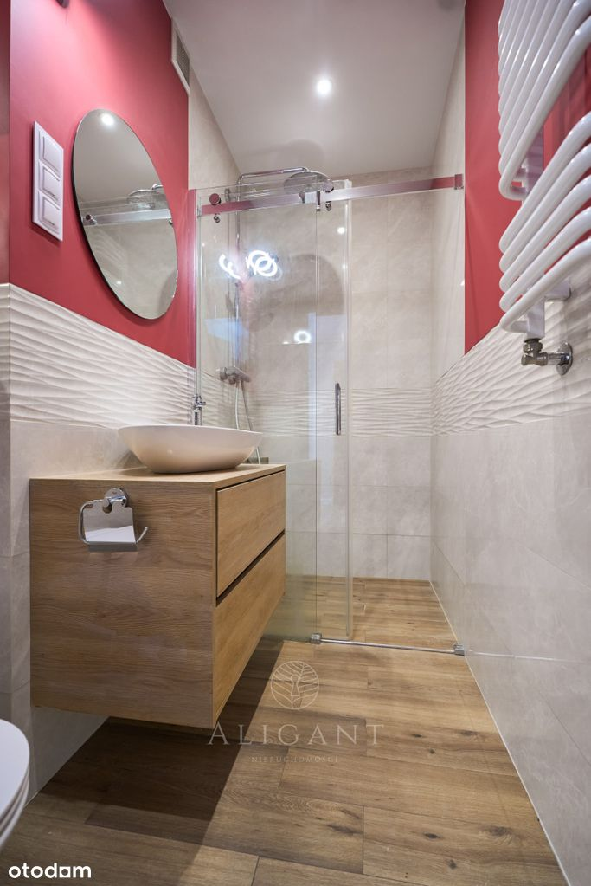
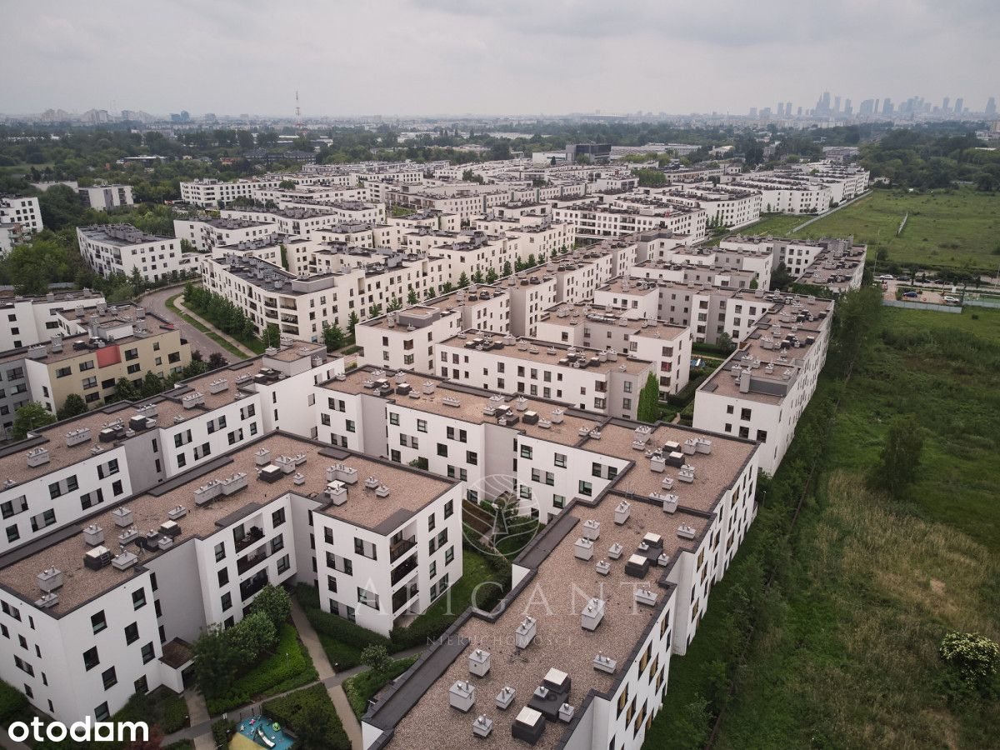
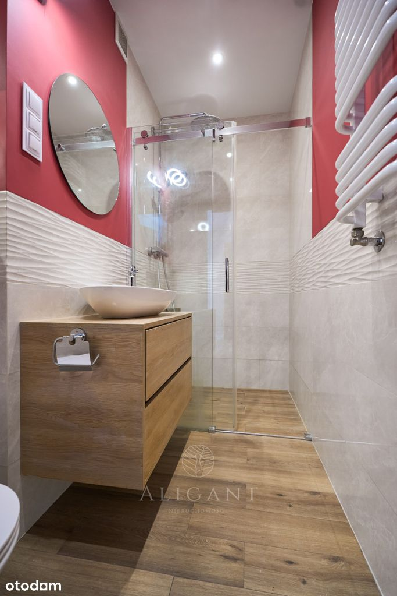
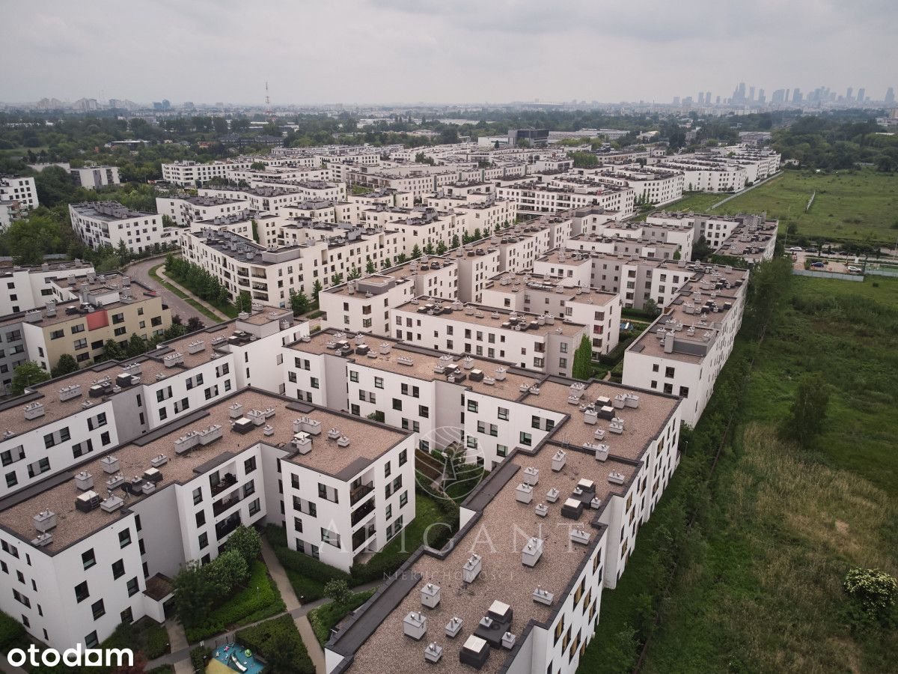

Z przyjemnością prezentuję Państwu przestronne, 3-pokojowe mieszkanie o powierzchni 69,56 m², zlokalizowane na kameralnym, nowoczesnym Osiedlu Wilno przy ul. Pohulanka w Warszawie.
W SKRÓCIE:
★ ul. Pohulanka 3A. Targówek, Warszawa
★ Rok budynku 2018
★ Powierzchnia 69,56 m²
★ 3 pokoje (w tym salon z aneksem kuchennym)
★ Loggia
★ Miejsce parkingowe w garażu podziemnym + komórka lokatorska (płatne dodatkowo)
Funkcjonalny układ i przestronne wnętrze
Mieszkanie jest idealną propozycją dla rodziny, pary lub osób ceniących funkcjonalność i wygodę. Zostało zaprojektowane w przemyślany sposób zapewniając dużo miejsca do przechowywania, jednocześnie pozostawiając przestronność wnętrza.
Rozkład pomieszczeń:
• salon z nowocześnie zaprojektowanym aneksem kuchennym
• sypialnia główna
• dodatkowy pokój idealny jako gabinet lub pokój dziecięcy
• łazienka z wanną
• druga łazienka z prysznicem
• przedpokój z szafami wnękowymi
Dodatkowe udogodnienia:
• klimatyzacja - zapewniająca komfort latem
• loggia - jako idealne miejsce do porannej kawy lub wieczornego relaksu
• dwie osobne łazienki
Bezpieczeństwo i otoczenie
Osiedle jest ogrodzone, monitorowane i strzeżone, co zapewnia mieszkańcom spokój i bezpieczeństwo. W obrębie inwestycji znajduje się wiele punktów handlowo-usługowych, sklepów, restauracji, salonów urody oraz placów zabaw dla dzieci.
Lokalizacja i komunikacja
• tylko 4 minuty do Dworca Wileńskiego - szybki dojazd do centrum i dogodna komunikacja miejska
• w pobliżu ścieżki rowerowe, tereny zielone, szkoły i przedszkola
Podsumowanie
To idealna propozycja dla osób poszukujących komfortowego mieszkania w spokojnej, a jednocześnie świetnie skomunikowanej lokalizacji. Gotowe do wprowadzenia - nie wymaga żadnych nakładów.
Zapraszam do kontaktu i umówienia się na prezentację!
Z przyjemnością opowiem więcej i pokażę Państwu to wyjątkowe miejsce osobiście.
_
Jeśli przy zakupie nieruchomości planujesz posiłkować się kredytem odezwij się do nas. Nasz zaufany doradca kredytowy bezpłatnie zweryfikuje Twoją zdolność i przeprowadzi przez cały proces kredytowy od początku do końca.
_
Pośrednik odpowiedzialny zawodowo za wykonanie umowy pośrednictwa:
Daniel Krych
Ekspert ds. Nieruchomości
tel. 788 136 227

 
